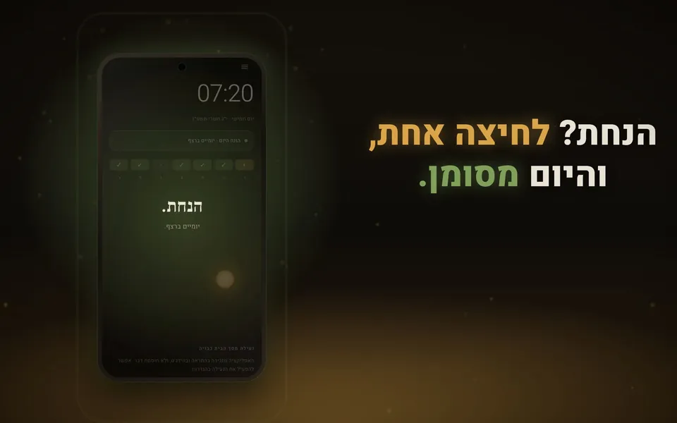

הנחתי
אפליקציית אנדרואיד שעוזרת להקפיד על הנחת תפילין כל בוקר: הטלפון נפתח ברגע שמדווחים שהנחת.
- Android
- Kotlin
- Gradle
עוד פרטים
- זמני היום לפי 54 ערים או לפי מיקום, מחושבים במכשיר עצמו
- יודעת מתי לא מניחים: שבתות, חגים, חול המועד לפי המנהג ותשעה באב
- סדר הנחת תפילין בנוסח אשכנז וספרד, פרשת השבוע ותהילים
- עובדת בלי אינטרנט, ושום דבר לא נשלח לשום מקום